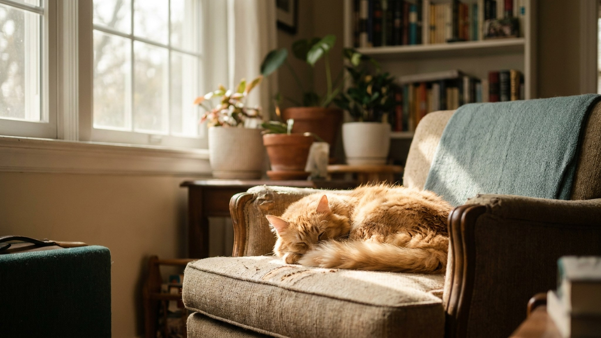

Питомец спит весь день: это нормально или повод беспокоиться

13 июня 2026 · 7 минут чтения · Поведение
Кошка спит снова — хотя, кажется, только что просыпалась. Собака проспала всё утро. Для большинства владельцев это норма, но для некоторых — повод для тревоги. Разбираем реальные цифры: сколько часов в сутки спят кошки и собаки в зависимости от возраста — и когда изменение режима сна действительно говорит о чём-то важном.
🐾 Первая помощь — всегда под рукой
AnimaLife подскажет, что делать в тревожной ситуации с питомцем ещё до визита к врачу. Откройте в один тап.
Открыть AnimaLife → Открыть в MAX →
Норма сна для кошки по возрасту
Кошки — облигатные плотоядные с охотничьим циклом: охота требует концентрации и взрыва энергии, а значит — много отдыха между всплесками активности. Это заложено эволюционно.
- Котята до 6 месяцев: 18–20 часов в сутки. Это норма: во сне идёт рост и развитие нервной системы.
- Молодые кошки 6 месяцев — 2 года: 16–18 часов. Энергия есть, но сон всё ещё занимает большую часть дня.
- Взрослые кошки 2–10 лет: 14–16 часов. Классическая норма. Активность сосредоточена утром, вечером и ночью.
- Возрастные кошки 10+ лет: 16–20 часов. Норма сна снова растёт — это физиология, а не болезнь.
Кошка спит не подряд — она дремлет циклами по 15–30 минут. Длинный глубокий сон у кошек занимает лишь часть от общего времени отдыха.
Норма сна для собаки по возрасту
Собаки в целом спят меньше кошек, но тоже значительно больше людей. Норма зависит от возраста, породы и уровня активности.
- Щенки до 6 месяцев: 18–20 часов в сутки. Как и котята — рост и развитие требуют сна.
- Молодые собаки 6 месяцев — 2 года: 14–16 часов. Много энергии во время бодрствования, но и восстановление после нагрузки занимает время.
- Взрослые собаки 2–7 лет: 12–14 часов. Норма для большинства пород. Крупные и гигантские породы спят на 1–2 часа больше.
- Пожилые собаки 8+ лет: 16–18 часов. С возрастом потребность в отдыхе растёт.
Рабочие и охотничьи породы в состоянии активной службы спят меньше — работа снижает потребность в дремоте. Диванные образцы той же породы без нагрузки спят больше.
Что влияет на сон питомца
Несколько факторов нормально меняют режим сна в обе стороны:
- Погода: в пасмурные и холодные дни кошки и собаки спят дольше — реакция на изменение освещённости.
- Физическая нагрузка: после длительной прогулки или активной игры собака спит дольше и глубже. Это нормально.
- Стресс: переезд, новый питомец в доме, изменения режима — могут вызвать либо бессонницу, либо избыточный сон.
- Стерилизация: в первые 1–2 недели после операции сон увеличивается — организм восстанавливается.
- Сезон: в зимние месяцы многие питомцы спят больше — особенно кошки.
Когда изменение сна — сигнал обратиться к ветеринару
Важно не абсолютное количество часов, а изменение привычного паттерна конкретного питомца. Нормальный для вашей кошки режим — это её личный базовый уровень.
- Питомец стал спать заметно больше обычного — и при этом потерял интерес к еде, игре, общению.
- Нарушение ночного сна: беспокойство, хождение ночью, крики или скуление без причины (особенно у возрастных животных).
- Животное трудно разбудить, вялое после пробуждения, не реагирует на привычные стимулы.
- Резкое снижение сна с одновременным нарастанием тревожного или деструктивного поведения.
Один-два дня повышенного сна без других тревожных признаков — обычно не повод для срочного визита. Устойчивое изменение на неделю и дольше — повод обсудить с ветеринаром.
Где и как спит питомец: это тоже важно
Качество сна зависит не только от количества часов, но и от места и условий отдыха.
- Кошке нужно несколько мест для сна — высокие и укромные. Кошка, которая спит только на одном месте, может испытывать стресс или боль при движении.
- Собаке нужна своя лежанка в тихом месте без сквозняков. Принуждение спать на полу или в неудобном месте снижает качество отдыха.
- Сон рядом с хозяином снижает тревожность у многих питомцев — это нормально, если устраивает обе стороны.
- Температура: и кошки, и собаки предпочитают тёплые места сна. Особенно это важно для возрастных животных и короткошёрстных пород.
Дремота vs глубокий сон у кошек и собак
Питомцы проводят большую часть времени отдыха в поверхностном сне — в этом состоянии они готовы мгновенно отреагировать на звук или движение. Это инстинкт, сохранившийся от диких предков. Признаки поверхностного сна: уши подёргиваются, лапы иногда двигаются, веки не полностью закрыты.
- Глубокий сон (аналог REM у людей): животное полностью расслаблено, иногда подёргивает лапами или издаёт тихие звуки — это нормально, это «активный сон».
- Не будите питомца резко из глубокого сна — дезориентированная собака или кошка может среагировать испугом.
- Кошки спят в среднем 7–10 отдельных циклов в день. Собаки — меньше, но длиннее.
Что делать, если питомец мешает спать ночью
Ночная активность кошки — частая жалоба. Кошки природно активны в сумерки и рассвет, что может совпадать с человеческим ночным сном.
- Вечерняя активная игра за 1–2 часа до сна снижает ночную активность кошки.
- Кормление перед сном: сытая кошка дремлет дольше.
- Закрытая дверь в спальню — законное решение. Кошка адаптируется, особенно если у неё есть своя лежанка.
- Для собаки ночное беспокойство — сигнал. Молодая собака, скорее всего, недополучает нагрузку днём. Возрастная — повод к ветеринарному осмотру.
🐾 Экономьте на лишних визитах к врачу
Сначала спросите AI-ветеринара в AnimaLife — часто этого достаточно, чтобы понять, нужен ли визит к врачу.
Спросить бесплатно → Спросить в MAX →
🐾 Понравился разбор?
Подпишитесь на канал — каждый день разбираем по одному тревожному симптому у кошек и собак: что в пределах нормы, а когда пора к врачу. Подпишитесь, чтобы не пропустить разбор, который может спасти здоровье вашего питомца.
Материал носит информационный характер и не заменяет очную консультацию ветеринара.
← Все статьи · Открыть AnimaLife в Telegram · RSS